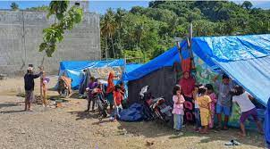
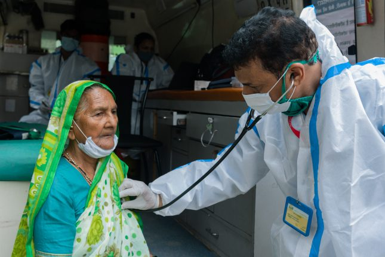
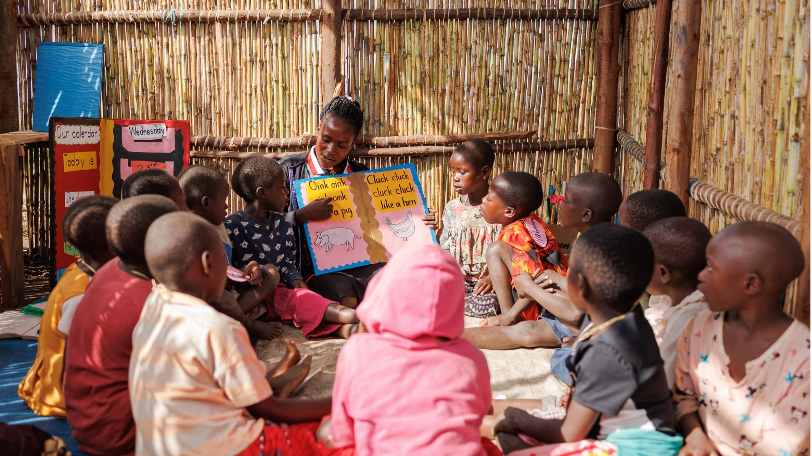

Emergency Shelter
Providing safe and secure housing for refugees who have fled dangerous situations, ensuring their immediate safety.

Food and Water Distribution
Delivering essential food and clean water to refugees in camps and temporary shelters, ensuring their survival and well-being.

Healthcare Assistance
Offering medical support, including vaccinations, health check-ups, and trauma care, to refugees in need of urgent healthcare services.

Education for Refugee Children
Providing access to education for refugee children, helping them regain a sense of normalcy and hope for the future.
Legal Assistance
Offering legal support and guidance to refugees navigating the asylum process, ensuring they understand their rights and options.

Vocational Training
Helping refugees acquire new skills and trades to rebuild their lives and support their families in new communities.